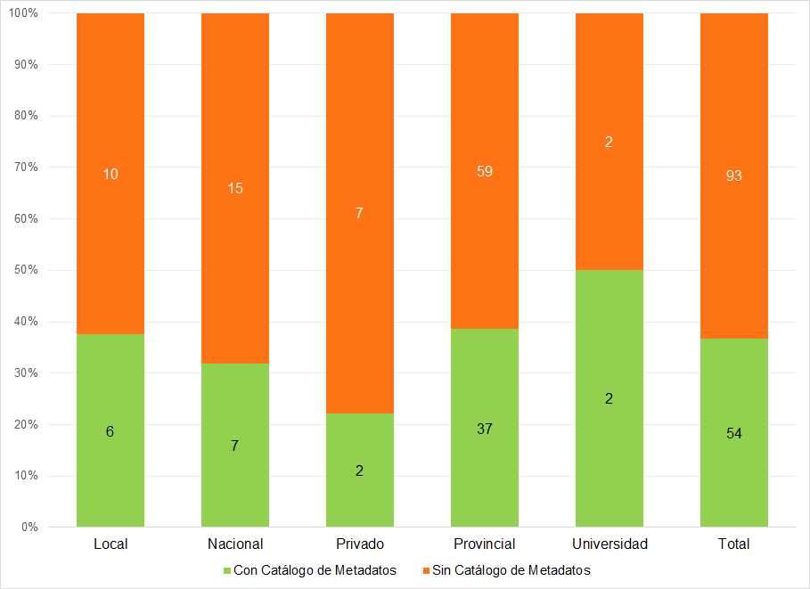
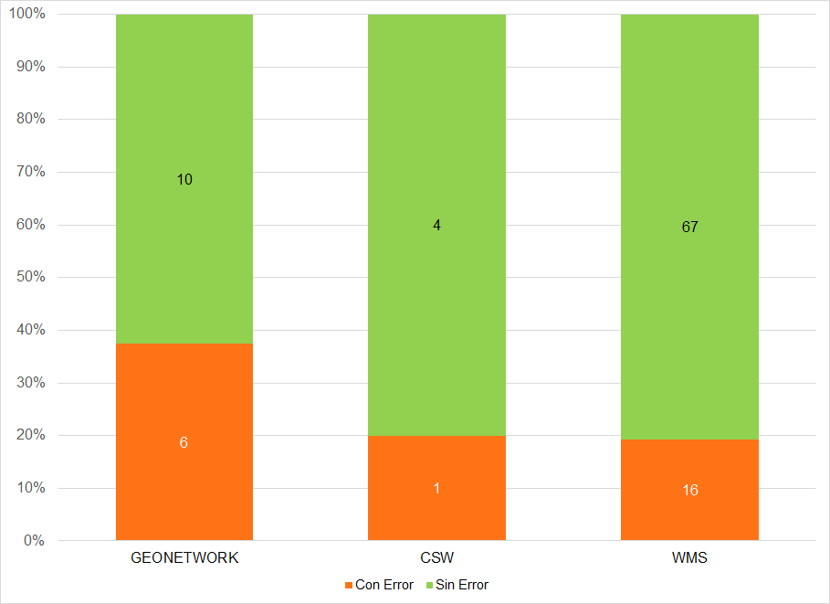

La evaluación de IDE de IDERA¶
Antecedentes¶
IDERA¶
Según consta en su sitio web, la Infraestructura de Datos Espaciales de la República Argentina (IDERA) es “una comunidad de información geoespacial que tiene como objetivo propiciar la publicación de datos, productos y servicios, de manera eficiente y oportuna como un aporte fundamental a la democratización del acceso de la información producida por el Estado y diversos actores, y al apoyo en la toma de decisiones en las diferentes actividades de los ámbitos público, privado, académico, no gubernamental y sociedad civil1.
En términos organizacionales, según el reglamento de funcionamiento publicado en IDERA (2015), la Coordinación Ejecutiva de IDERA está a cargo del Instituto Geográfico Nacional, cuyas funciones son facilitar el trabajo que se realiza desde los Grupos de Trabajo y el Equipo Coordinador para implementar sus decisiones; recibir y resguardar la documentación; celebrar convenios; y convocar a reuniones.
Para articular el trabajo, el Equipo Coordinador de IDERA agrupa a representantes de todas las jurisdicciones y niveles de gobierno del país, así como de los consejos federales de Catastro y Planificación y de las universidades públicas, teniendo por responsabilidades generales la conducción del funcionamiento de IDERA y la articulación con los Grupos de Trabajo2.
Una parte de las actividades de IDERA es realizada por Grupos de Trabajo de libre participación. Cada grupo tiene una serie de metas y objetivos planificados anualmente y genera documentos, recomendaciones, estándares y productos necesarios para que IDERA funcione y sirva a las IDE del país. Los grupos Marco Institucional; Academia y Ciencia; Capacitación; Difusión y Comunicación se orientan más a cuestiones institucionales. Los grupos Metadatos; Tecnología y Desarrollo; e Información Geoespacial realizan las adaptaciones locales de los estándares internacionales, las cuales son volcadas en documentos y recomendaciones que son las que se consideran en la Evaluación de IDE. El Grupo Marco Institucional fue el encargado de diseñar el procedimiento de la Evaluación en conjunto con personal de la Coordinación Ejecutiva de IDERA. Dentro de cada uno de los grupos se elige un representante que lo coordine y lo represente ante el Equipo Coordinador.
Estudio previo de los nodos IDE¶
Como primer antecedente en materia de evaluación, la Coordinación Ejecutiva de IDERA realizó un trabajo de seguimiento y monitoreo de los nodos IDE existentes en el país desde 2014 a 2017. Entendiendo a los nodos como cada uno de los organismos que publica información geográfica, independientemente de si existe una IDE superior que los aúne.
El trabajo surgió por la necesidad de conocer qué organismos de Argentina, sin importar su jurisdicción o nivel en el organigrama, publicaban información geográfica y en qué estado de desarrollo de la IDE se encontraban. Inicialmente se trató de mantener la información publicada por IDERA actualizada en su página web y de conocer las necesidades de las IDE del país.
El seguimiento se realizó relevando los datos comunes a todas las IDE, links de acceso, tipo y jurisdicción, software utilizado, estado de apertura y observaciones sobre su funcionamiento. A partir de estos datos es que se analizaron los resultados, para encontrar las problemáticas más comunes en la implementación de las IDE y para generar las variables de la evaluación.
De un total de 147 nodos IDE que formaban parte de IDERA en 2017 (que se detallan en el anexo del presente trabajo) según se advierte en el siguiente gráfico, casi dos tercios correspondían a organizaciones gubernamentales de nivel provincial, un séptimo era del gobierno nacional y un décimo municipales, con una participación mínima en el total del sector privado y de las universidades.
Gráfico 1 - Cantidad de Nodos IDE por jurisdicción

Fuente: elaboración propia en base al relevamiento realizado por el Instituto Geográfico Nacional
En 2017 (Gráfico 2) la mayoría de las provincias relevadas se encontraban representadas por 1 o 2 nodos IDE, pero las provincias de Misiones, Neuquén y Tucumán mostraban una infraestructura muy descentralizada, siendo esta última la que más nodos tenía (21). También las provincias de Buenos Aires, Mendoza y Formosa habían desarrollado más de tres nodos, a fin de no centralizar la información.
Gráfico 2 - Cantidad de Nodos por provincia

Fuente: elaboración propia en base al relevamiento realizado por el Instituto Geográfico Nacional
Tal como se observa en el Gráfico 3, poco más de un tercio de los organismos relevados poseían un catálogo de metadatos que permitiese el descubrimiento de la información publicada. Así, el 63% de los nodos IDE registrados no lo habían implementado, a pesar de ser una herramienta esencial dentro de una IDE.
Gráfico 3 - Cantidad de nodos por disponibilidad de Catálogo de Metadatos

Fuente: elaboración propia en base al relevamiento realizado por el Instituto Geográfico Nacional
Del análisis de la disponibilidad de geoservicios de visualización de capas (WMS) que vemos en el Gráfico 4, se advierte que todavía existían muchas IDE que no publicaban WMS, aunque la gran mayoría ya había implementado esta cuestión básica para una IDE.
El mayor inconveniente residía en la falta de geoservicios de descarga (WFS), tal como muestra el Gráfico 5, ya que en casi la mitad de las IDE relevadas no se encontraba disponible este servicio.
Gráfico 4 - Cantidad de nodos por disponibilidad de Servicio de visualización de WMS

Fuente: elaboración propia en base al relevamiento realizado por el Instituto Geográfico Nacional
Gráfico 5 - Cantidad de nodos por disponibilidad de Servicio de descarga de capas WFS

Fuente: elaboración propia en base al relevamiento realizado por el Instituto Geográfico Nacional
Un tema de gran importancia en la comunidad de IDERA es lograr que las implementaciones IDE sean lo más sustentables posibles, para ello se recomienda el uso de software libre y de código abierto. Así, se observa en el Gráfico 6 que la gran mayoría de los organismos eligían dos de las más populares herramientas de servidores de mapas de este tipo como son Geoserver3 y MapServer4, aunque algunos organismos aún usaban programas pagos, como ArcGIS Server5.

Fuente: elaboración propia en base al relevamiento realizado por el Instituto Geográfico Nacional
En el análisis de la estandarización de la publicación de la información, resulta relevante que las herramientas implementadas para dicha tarea se personalicen para que posean los datos correspondientes al organismo que realiza la publicación de la información. Una de las fallas recurrentes son los datos incompletos asociados al Servicio WMS, ya que, por no personalizarse con la información del organismo, muchos geoservicios quedan nombrados de manera predeterminada como “Geoserver Web Map Service”, como se ve en el Gráfico 7, lo que los hace difícil de identificar y distinguir.
Gráfico 7 - Cantidad de nodos por personalización de los Metadatos de Servicio WMS

Fuente: elaboración propia en base al relevamiento realizado por el Instituto Geográfico Nacional
Como parte de las tareas dirigidas a facilitar el descubrimiento y el acceso a la información publicada por sus integrantes, IDERA realizó en 2016 la instalación de un catálogo de metadatos propio con el software Geonetwork. Desde el mismo es posible “cosechar” la información publicada a través de los geoservicios, a fin de que sea más fácil encontrarla para los usuarios, entre otros beneficios. En esta tarea es que se cosecharon los geoservicios de visualización WMS y de metadatos CSW de los organismos que los tienen disponibles. De esta manera, además de poder crear registros de metadatos para todas las capas existentes, aún si el nodo IDE no tiene su propio servicio de catálogo, se encontró que muchos servicios, en particular los WMS, tenían problemas de funcionamiento, lo que imposibilitaba su uso frecuentemente, como vemos en el Gráfico 8.
Gráfico 8 - Errores en la cosecha de geoservicios por tipo de fuente de datos

Fuente: elaboración propia en base al relevamiento realizado por el Instituto Geográfico Nacional
Del seguimiento de nodos a la necesidad de su evaluación¶
A partir de la experiencia de seguimiento de nodos referida, surge que los niveles de aplicación de los estándares de IDERA, son muy heterogéneos. Ello ha permitido identificar la existencia de muchas oportunidades de mejora en los nodos IDE evaluados.
Además de estos resultados del seguimiento y monitoreo de los nodos de IDERA, se destaca como otro hito muy importante en el proceso previo al desarrollo de la evaluación de IDE de IDERA, el pedido por parte del Equipo Coordinador al Grupo de Trabajo Marco Institucional de generar algún sello o certificación de que las IDE cumplen con los estándares de IDERA.
Así, se llegó a la conclusión de que se tornaba imprescindible definir una metodología de evaluación de la aplicación de las recomendaciones generadas por IDERA, que apunte a lograr su plena y correcta implementación por parte de todos sus integrantes, como una forma de garantizar el nivel de interoperabilidad que requiere toda IDE.
A partir de estos antecedentes, el proceso del que surge la evaluación de IDE de IDERA ha incluido, por parte del Grupo de Trabajo Marco Institucional, una importante labor de desarrollo preliminar de ejemplos de posibles criterios y formas de calificar, originalmente, a las IDE que formen parte de IDERA.
Contando con este importante trabajo previo, la Coordinación Ejecutiva de IDERA procuró analizar los componentes de las IDE y los estándares y recomendaciones publicados por IDERA, para entender cuáles eran las variables con mayor capacidad para dar cuenta del estado de situación de las IDE en materia de cumplimiento de dichos estándares y recomendaciones y que, a su vez, resultasen factibles de traducirse en indicadores de cara a su evaluación.
A su vez, IDERA busca que la evaluación genere una oportunidad para desarrollar actividades de capacitación dirigidas a quienes integran las diversas IDE, en relación a la adecuada implementación de las recomendaciones, en el marco de un acompañamiento institucional.
IDERA espera, de este modo, contar con más y mejores herramientas para acompañar a las IDE, tanto consolidadas como incipientes, en la implementación de los estándares establecidos, de forma continua y a largo plazo, a través de una metodología que pueda utilizar tanto IDERA como sus integrantes para autoevaluarse.
Desde IDERA eso permite destacar a quienes generen implementaciones estandarizadas e interoperables acordes con sus recomendaciones y, en el otro extremo de la escala de valoración, identificar las experiencias que requieren un mayor esfuerzo en pos de transformar sus debilidades en fortalezas.
-
[IDERA - ¿Qué es IDERA?] (https://www.idera.gob.ar/index.php?option=com_content&view=article&id=274&Itemid=203) En tal sentido, cabe considerar a la Información Geográfica como un bien público y, por tanto, a su acceso y uso como un servicio público. ↩
-
En términos más específicos, el reglamento de funcionamiento de IDERA establece que su Equipo Coordinador tiene por funciones la promoción de legislación, de los distintos niveles de gobierno, referida a las IDE; el fortalecimiento institucional de las organizaciones que integran IDERA; la emisión de las opiniones consultivas que se le soliciten; la coordinación y promoción de la difusión de datos geoespaciales mediante el auspicio de jornadas; la cooperación con foros, agencias y organismos regionales e internacionales dedicados a la temática IDE; la modificación de su propio reglamento; la elaboración de su Plan Anual de Trabajo; la convocatoria a la opinión de expertos; la elaboración, comunicación y publicación de la Memoria Anual de IDERA; la definición del número, temas y objetivos de los Grupos de Trabajo; la coordinación de las actividades de los Grupos de Trabajo; la aprobación de los productos de los Grupos de Trabajo; la consideración de las solicitudes de incorporación a IDERA de nuevos actores. ↩
-
Gráfico 6 - Cantidad de nodos por tipo de Software de visualización de WMS